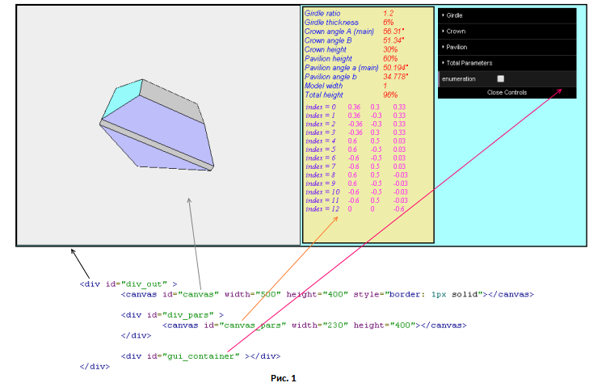
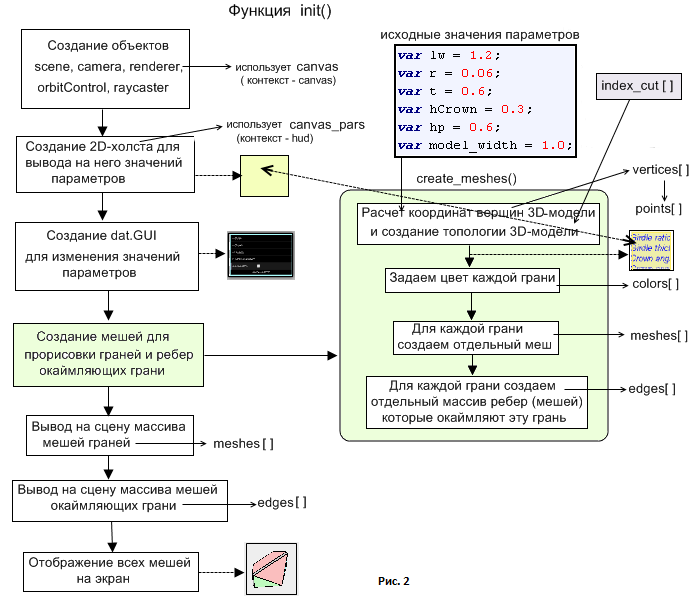

В предыдущей части для модели пирамиды мы создали два массива данных -
plgs и faces. Покажем как на их основе
при помощи библиотеки three.js сделать работающую программу отображения 3D-модели.
Программу отображения можно сделать как на отдельной странице, так и на странице содержащй
другую информацию - так как это представлено в предыдущей части.
Программа отображения модели пирамиды на отдельной странице.
В обоих вариантах основная часть кода имеет одинаковый вид и отличается главным образом только в тех
частях, которые относятся к заданию и выводу на экран значений параметров модели.
Рассмотрим как происходит вывод в браузер программы прдставленной в предыдущей части.
Вывод будем осуществлять в web-элементе div_out (рисунок 1). Этот блок имеет относительное (relative) позиционирование в нормальным потоке элементов на web-странице. Внутри него расположим элемент типа canvas (и дадим ему такое же имя canvas) для отображения трехмерной модели пирамиды. Для этого элемента будет использоваться специальный WebGL контекст для трехмернного рисования модели. В блоке div_pars, имеющем абсолютное позиционирование относительно блока div_out, расположим другой элемент типа canvas с именем canvas_pars. Этот элемент определим для вывода значений параметров модели и другойсопутствующей информации. В отличие от предыдущего элемента canvas, этот элемент canvas_pars предназначен для использования в нем двумерного контекста. В правой части блока div_out расположим блок gui_container предназначенный для изменения значений параметров модели. Этот блок относительно div_out имеет абсолютное позиционирование.
В блоке расположена панель управления использующая специальную библиотеку dat.GUI. Описание работы dat.GUI можно найти в интернете по адресу . Обычно в примерах использования панель dat.GUI помещается в правой части web-страницы. В отличие от этого, в данной программе панель размещена в специально для нее отведенным блоке div.

Отображение на экран осуществляется при помощи библиотеки three.js и необходимо подключить ее и некоторые другие модули к программе. Скачать библиотеку и дополнительные модули (в том числе OrbitControls.js, который используется для осмотра модели пирамиды с разных сторон) можно по ссылке. Библиотека three.js предоставляется в двух видах - в виде полного не сжатого текста (three.js) и в виде минимизированного текста из которого убраны пробелы.(three.min.js). Использовать можно любой вариант. В интернете можно найти очень много примеров использования данной библиотеки. Поэтому рассмотрим использование ее компонентов весьма кратко и обратим внимание только на ключевые для нас моменты. Исходный текст программы с комментариями находится в файле pyramid_1.js.
После того как web-страница загружена возникает событие onload в котором вызывается
функция init. Ее блок-схема представлена на рисунке 2.

Во процессе работы данной функции создаеся сцена (scene),
камера(camera), визуализатор (renderer).
и orbitControl который позволяет производить обход и осмотр модели со всех сторон.
Дополнительно создается raycaster для выбора и изменения цвета конкретной
грани модели путем наведения на нее указателя мыши. Эти пять объектов входят как стандартные
в библиотеку three.js.
canvas = document.getElementById("canvas");
// Создаем трехмерную сцену, перспективную камеру и рендерер
scene = new THREE.Scene();
// Создаем перспективную камеру.
camera = new THREE.PerspectiveCamera(45, canvas.width / canvas.height, 0.1, 1000);
camera.position.x = 5;
camera.position.y = 10;
camera.position.z = -20;
camera.lookAt(new THREE.Vector3(0, 0, 0));
scene.add(camera);
// Создаем renderer
renderer = new THREE.WebGLRenderer({canvas: canvas});
renderer.setClearColor(0xEEEEEE, 1.0);
renderer.setSize(canvas.width, canvas.height);
// Элемент управления дающий возможность осматривать модель пирамиды со всех сторон.
orbitControl = new THREE.OrbitControls(camera, canvas);
raycaster = new THREE.Raycaster();
// Создаем холст HTML5 на который будем выводить
// вспомогательную информацию (например значения параметров).
hud = document.getElementById("canvas_pars");
ctx = hud.getContext('2d');
if (!ctx)
{
console.log('Failed to get rendering context');
return;
}
Для задания значений параметров, как отмечалось ранее, используется библиотека dat.GUI
и созданный на ее основе объект dat.GUI.
В объекте controller определяем свойства для параметров модели и их начальные значения:
controller = new function()
{
this.lw = 1.2;
this.r = 0.06;
this.hCrown = 0.3;
this.t = 0.6;
this.hp = 0.6;
this.anglePav = Math.atan(hp/0.5) / DEGREE;
this.model_width = 1.0;
this.totalHt = hCrown + r + hp;
this.totalHtFix = hCrown + r + hp;
this.enumeration = false;
}();
Кроме свойств для параметров изначально задающих форму и размер модели, также входят свойства для
трех вычисляемых параметров - anglePav, totalHt и totalHtFix,
а также enumeration.
После этого мы создаем JavaScript объект, который будет анализировать свойства, которые мы хотим изменить,
используя библиотеку dat.GUI:
// Создаем новый объект dat.GUI.
var gui = new dat.GUI({ autoPlace: false });
gui.domElement.id = 'gui';
gui_container.appendChild(gui.domElement);
var f1 = gui.addFolder('Girdle'); // создаем папку для параметров рундиста
f1.add(controller, 'lw', 0.5, 4.0).onChange( function()
{
// в папке создаем поле для параметра lw
orbitControl.enabled = false;
lw = controller.lw;
recalc();
});
f1.add(controller, 'r', 0.01, 2).onChange( function()
{
// в папке создаем поле для параметра r
orbitControl.enabled = false;
r = controller.r;
recalc();
});
var f2 = gui.addFolder('Crown'); // создаем папку для параметров короны
f2.add(controller, 'hCrown', 0.05, 0.9).onChange( function()
{
// в папке создаем поле для параметра hCrown
orbitControl.enabled = false;
hCrown = controller.hCrown;
recalc();
});
....................................
....................................
// В объект dat.GUI добавляем свойство 'enumeration' для нумерации вершин модели
gui.add( controller, 'enumeration', false ).onChange( function()
{
enumeration = controller.enumeration;
if (enumeration == true) // переключатель да / нет
{
if (numbers.length == 0)
{
// если нумерации еще нет то создаем ее
create_num_vertices();
}
for(i = 0; i < numbers.length; i++)
{
// выводим на экран нумерацию вершин модели
scene.add(numbers[i]);
}
}
else
{
for(i = 0; i < numbers.length; i++)
{
// убираем с экрана нумерацию вершин модели
scene.remove(numbers[i]);
}
}
});
Для каждой 3D-модели очень важное значение имеет область пределов, в которой значения параметров
могут изменяться без того, чтобы модель стала некорректной. Например очевидно, что в модели пирамиды
значения параметров не могут меньше нуля. Углы наклона граней короны не должны превышать или быть равной
90°. Но обычно очень важно просто ограничить значения величин некоторых параметров исходя из
практических соображений. Например, поэтому мы ограничиваем значения параметра lw
интервалом от 0.5 до 4.0 следующим образом:
f1.add(controller, 'lw', 0.5, 4.0).onChange( function()
Проверка выпуклости производится следующим образом. Через каждую грань проводится плоскость, в которой эта грань лежит, и затем определяется положение каждой вершины модели относительно этой плоскости. Все вершины должны быть расположены по одну и ту же сторону от этой плоскости. Если это условие выполняется, то модель признается корректной. В противном случае модель признанается некорректной, и производится возвращение к исходному значению измененного параметра а затем модель снова перестраивается. Для моделей огранок имеющих невыпуклый рундист (только этот элемент некоторых огранок, таких как Heart, может быть невыпуклым) проверка выпуклости производится отдельно для короны и отдельно для павильона. Рундист, при этом, исключается из проверки.
// Функция проверки того правильно ли построена модель огранки.
// В данном случае это проверка того является ли построенная 3D модель выпуклой.
function isCorrect()
{
var i, j;
// Проходим по всем граням модели
for (i = 0; i < plgs.length; i++)
{
var plg = plgs[i];
var face3 = plg.IndexTriangle[0];
var ind1 = face3.a;
var ind2 = face3.b;
var ind3 = face3.c;
var pt1 = new Point3D(points[ind1].x, points[ind1].y, points[ind1].z);
var pt2 = new Point3D(points[ind2].x, points[ind2].y, points[ind2].z);
var pt3 = new Point3D(points[ind3].x, points[ind3].y, points[ind3].z);
var plane = new Plane3D();
plane.CreatePlaneThreePoints(pt1, pt2, pt3);
// Проходим по всем вершинам модели
for (j = 0; j < points.length; j++)
{
var pt_test = new Point3D(points[j].x, points[j].y, points[j].z);
var dist = plane.DistancePoint(pt_test);
if (dist > 0.000001)
{
// невыпуклая модель
return -1;
}
}
}
}
init. После создания dat.GUI вызывается функция
create_meshes. Последовательно в ней выполняются следующие действия:
Предварительная очистка используемых массивов
Рассчитываются координаты вершин 3D-модели функцией VerticesCalculation
Создается топология модели функцией CreatePolyhedron
Вывод на холст hud значений параметров.
Из массива vertices создается массив координат вершин в виде (x, y, z)
Задается цвет каждой грани
Для каждой грани модели создается отдельный меш
Для каждой грани модели создается отдельный массив ребер окаймляющих эту грань
Рассмотрим подробнее пункт 5 из этого списка. В массиве vertices полученной с помощью функции
VerticesCalculation все значения координат вершин модели хранятся подряд x, y, z, x, y, z, ... .
Поэтому каждые три последовательные значения, соответствующие одной вершшине модели из массива vertices
должны быть переведен в координаты x, y, z вершины модели с типом THREE.Vector3 и помещены
в массив points. kf - это масштабный множитель для полигонов из которых состоят грани при их отображении.
Про выбор его величины будет сказано дальше.
for (i = 0; i < vertices.length/3; i++)
{
var point3 = new THREE.Vector3();
for (j = 0; j < 3; j++)
{
point3.x = kf * vertices[el];
point3.y = kf * vertices[el + 1];
point3.z = kf * vertices[el + 2];
}
points.push(point3);
el = el + 3;
}
В рассматриваемой программе исползуются объекты (меши) двух видов. Один - для отображеня самих граней, а другой для отображения ребер окаймляющих каждую грань.
Для каждой грани создаем свой собственный отдельный объект - меш. Все эти созданные объекты,
каждый из которых определяет одну граиь модели, помещаются в массив meshes. Для каждой грани
используется материал THREE.MeshBasicMaterial с цветом определенным в файле pyramid_colors.js для
этой грани.
for (i = 0; i < plgs.length; i++) // цикл по всем граням
{
var geometry = new THREE.Geometry();
// координаты (geometry.vertices) требуемых вершин для faces берутся
// из общего массива вершин points для всех граней модели
geometry.vertices = points;
var plg = plgs[i];
var index_triangle = plg.IndexTriangle;
// грань может состоять из нескольких треугольников
for (var j = 0; j < index_triangle.length; j++)
{
index_triangle[j].color = colors[i]; // цвет всех треугольников
// на которые разбита грань один и тот же и определяется
// цветом всей грани из файла pyramid_colors.js
}
// определяем свойство faces объекта geometry
geometry.faces = index_triangle;
// присоединив ранее к index_triangle цвет грани,
// мы присоединили его теперь и к geometry.faces
// используем для меша стандартный материал THREE.MeshBasicMaterial
var material = new THREE.MeshBasicMaterial( { vertexColors: THREE.FaceColors } );
var mesh = new THREE.Mesh(geometry, material);
mesh.index = i; // используется при индикации номера грани модели
meshes.push(mesh);
}
После того, как нарисовали 3D-модель огранки и раскрасили цвета ее граней,
для лучшего зрительного восприятия модели желательно прорисовать все ее видимые ребра
при помощи прямых линий.
С этой целью создается проволочный экземпляр 3D-модели и накладывается на модель
с раскрашенными гранями. Проволочный экземпляр 3D-модели должен быть на очень
малую величину больше по размеру, чем модель с гранями. В этом случае
задние части проволочной модели будут закрыты моделью с гранями, а передние
ее части окажутся видимыми. Тем самым наблюдатель будет воспринимать пирамиду
как единую 3D модель с видимыми передними для него ребрами и невидимыми задними.
Для реализации этой возможности коэффициент kf_edges для проволочный модели
берется на очень малую величину большим, чем коэффициент kf используемый
при отображения раскрашенных граней.
// Создаем материал при помощи которого будут прорисовываться ребра 3D-модели.
// THREE.LineBasicMaterial позволяет прорисовать ребра прямыми линиями.
var material_line = new THREE.LineBasicMaterial({ color: 0x000000 });
// Для каждой грани создаем отдельный массив ребер которые окаймляют эту грань.
for (i = 0; i < plgs.length; i++) // цикл по всем граням модели
{
var geometry_line = new THREE.Geometry();
var points_line = [];
var facet = plgs[i].VertexFacet;
for (j = 0; j < facet.vertexes.length; j++) // цикл по вершинам текущей грани
{
var vert = facet.vertexes[j];
// при помощи коэффициента kf_edges увеличиваем размер модели относительно
// исходного ее размера
var point3 = new THREE.Vector3(kf_edges * vert[0], kf_edges * vert[1], kf_edges * vert[2]);
points_line.push(point3);
}
geometry_line.vertices = points_line;
var mesh_line = new THREE.Line(geometry_line, material_line);
edges.push(mesh_line);
}
По завершении создания всех 3D-объектов (мешей), функция init,
которая вызывала для этого create_meshes, выводит объекты на экран,
устанавливает обработчик события mousemove и вызывает функцию
производящую отображение сцены на экран (render):
// Вывод на сцену массива полигонов представляющих собой грани модели.
for(var i = 0; i < meshes.length; i++)
{
scene.add(meshes[i]);
}
// Вывод на сцену общего массива окаймляющих грани ребер модели.
for(var i = 0; i < edges.length; i++)
{
scene.add(edges[i]);
}
// Установка обработчика события mousemove для выбора граней модели
canvas.addEventListener( 'mousemove', onDocumentMouseMove, false );
// Отображение сцены на экран.
render();
На этом функция init завершает свою работу.
Значения параметров, координаты вершин модели, индикация номера выбранной грани отображаются на
на холсте canvas_pars. Если мы обратимся к приведенной выше блок-схеме, то увидим, что это отображение
осуществляется в функции create_meshes после того как рассчитаны все координаты вершин модели.
Для вывода этой информации используется функция pars_value, которая стандартными методами холста
canvas HTML5 выводит текст на экран. Для форматирования числовых значений используется функция
roundNumber:
function roundNumber(num, places)
{
return ( Math.round(num * Math.pow(10, places)) / Math.pow(10, places) );
}
Перед выводом очередной порции информации холст подвергается очистке в функции recalc: ctx.clearRect(0, 0, hud.width, hud.height);
Если значение какого-либо параметра изменилось то требуется пересчитать координаты модели и вывести на экран ее новую перестроенную форму и новые значения сопутствующей информации.
function recalc()
{
var i;
// Убираем со сцены полигоны.
for(i = 0; i < meshes.length; i++)
{
var mesh = meshes[i];
scene.remove(mesh);
}
// Убираем со сцены ребра.
for(i = 0; i < edges.length; i++)
{
scene.remove(edges[i]);
}
// Создаем новые полигоны и ребра и выводим их на сцену.
create_meshes();
for(i = 0; i < edges.length; i++)
{
scene.add(edges[i]);
}
for(i = 0; i < meshes.length; i++)
{
scene.add(meshes[i]);
}
// Очищаем холст и затем выводим на него новые значения параметров,
// а также дополнительную информацию.
ctx.clearRect(0, 0, hud.width, hud.height);
pars_value();
create_num_vertices();
}
Если поставаить "галочку" в поле enumeration находящемся на панели GUI, то рядом
с вершинами модели появятся номера этих вершин. Функция, которая осуществляет это действие имеет следующий вид:
// нумерация вершин модели
function create_num_vertices()
{
for(i = 0; i < numbers.length; i++)
{
scene.remove(numbers[i]); // предварительная очистка от старого текста
}
numbers.length = 0;
var x, y, z;
var ind = 0;
var number = 0;
var n = vertices.length / 3; // количество вершин модели
// вывод номеров вершин на экран
for (i = 0; i < n; i++)
{
// координаты текущей вершины
for (j = 0; j < 3; j++)
{
x = vertices[ind];
y = vertices[ind + 1];
z = vertices[ind + 2];
}
// Создание текста соответствующего номеру текущей вершины
// Текст - это объект типа меш (mesh), у которого предком
// является THREE.Object3D.
var meshText = new THREE.Object3D();
meshText.add(
// присоединяем к объекту meshText
// текст "номер грани" (3D-модель с закрашенными гранями) и делаем его видимым
new THREE.Mesh(
new THREE.Geometry(),
new THREE.MeshBasicMaterial({color: 0x000000, // черный цвет номера
side: THREE.DoubleSide,
shading: THREE.FlatShading})));
meshText.children[0].visible = true; // делаем видимым
generateGeometry( meshText, number.toString() );
// Так как у meshText предком является Object3D,
// от которого наследуются все объекты попадающие на сцену, и
// он отвечает за геометрическое положение объектов в пространстве
// то мы можем помещать текст на экране в требуемое место и масштабировать его.
// (трансформации примененные к верхнему уровню иерархии объектов
// применяются ко всем элементам лежащим ниже)
meshText.scale.set(0.07, 0.07, 0.07);
if ( (ind / 3) < 8 )
{ // для вершин с положительной координатой z
z = z + 0.02; // смещение относительно координаты вершины
meshText.position.set(kf*x, kf*y, kf*z);
}
else
{ // для вершин с отрицательной координатой z
z = z - 0.02; // смещение относительно координаты вершины
meshText.position.set(kf*x, kf*y, kf*z);
meshText.rotation.x = Math.PI; // для удобства
meshText.rotation.z = Math.PI; // зрительного воспрятия
}
numbers.push(meshText);
ind = ind + 3;
number = number + 1;
}
for(i = 0; i < numbers.length; i++)
{
scene.add(numbers[i]);
}
}
В процессе выполнения create_num_vertices для создания текста, соответствующего номеру каждой вершины,
вызывает функцию generateGeometry. Она в свою очередь, в функции create_text задает парметры
выводимого на экран текста:
var loaderText = new THREE.FontLoader(); // загрузчик шрифтов
// характеристики создаваемого текста
function create_text(txt)
{
var t =
{
text : txt, // текст номера, который небходимо отобразить
size : 9, // размер текста (высота символа)
height : 1, // толщина текста
curveSegments : 12, // количество точек (сегментов)
// кривой при рисовании буквы,
// отвечающие за качество изображения
// font : "gentilis", // название шрифта
bevelEnabled : false // включение фаски (при true)
};
return t;
}
// Создание текста для оцифровки текущей вершины огранки.
function generateGeometry(meshText, text)
{
var data = create_text(text);
loaderText.load
(
'gentilis_bold.typeface.js', // шрифт
function ( font )
{
var geometryText = new THREE.TextGeometry
(
data.text,
{
font: font,
size: data.size,
height: data.height,
curveSegments: data.curveSegments,
bevelEnabled: data.bevelEnabled
}
);
geometryText.center();
meshText.children[ 0 ].geometry.dispose();
meshText.children[ 0 ].geometry = geometryText;
}
);
}
В функции render при перемещении мыши по экрану, если ее указатель попадает на какую-либо грань
огранки, происходит вывод номера этой грани в окне отображения информации. С этой целью создается
объект raycaster. Для того, чтобы определить объекты, на которые попал указатель мыши,
нужно из камеры направить "луч" в точку где находится указатель и определить какию грань модели
он пересекает или, вообще, "луч" проходит мимо модели. В массиве intersects хранится следующая
информация об объектах:
object: объект, на котором находится указатель мыши
distance: расстояние до объекта
point: трехмерные координаты точки на объекте на которой находится указатель мыши
face: грань объекта - у нас объект состоит из одной грани - он сам "грань"
faceIndex: номер этой грани
function render()
{
orbitControl.enabled = true;
raycaster.setFromCamera( mouse, camera );
var intersects = raycaster.intersectObjects( meshes );
if ( intersects.length > 0 )
{
index = intersects[ 0 ].object.index;
old_color = intersects[ 0 ].object.material.color;
if ( (index != select_index) )
{
if (select_index != -1)
{
meshes[select_index].material.color = old_color;
}
}
print_text_index(index);
meshes[index].material.color = new THREE.Color("rgb(250, 0, 0)");
select_index = index; // номер выбранной грани
// изначально ни одна грань не выбрана и select_index = -1
// координаты точки на которую наведена мышь
pointX = intersects[ 0 ].point.x;
pointY = intersects[ 0 ].point.y;
pointZ = intersects[ 0 ].point.z;
// отображение координат точки на экране
........................................
ctx.fillText(...координаты...)
........................................
}
requestAnimationFrame(render);
renderer.render(scene, camera);
}
Мы рассмотрели программу в которой грани 3D-модели (каждая грань модели) представляют собой
отдельные объекты (mesh). Ниже приведен работающий экземпляр программы,
в которой все грани пирамиды объединены в единый объект.
В этом случае каждая грань этого объекта (не забываем, что используем библиотеку three.js)
представлена специальной структурой Face3.
В предыдущей программе освещения не было и поэтому для всех граней модели был взят
простейший материал MeshBasicMaterial.
Расмотрим программу, в которой осуществлена подсветка модели. В нее с этой целью введено
несколько источников света. Они освещающают модель с разных сторон:
// первый источник света
var spotLight1 = new THREE.SpotLight(0xff7700);
spotLight1.position.set(100, 0, 0);
scene.add(spotLight1);
// второй источник света
var spotLight2 = new THREE.SpotLight(0xff7700);
spotLight2.position.set(-100, 0, 0);
scene.add(spotLight2);
...............................................
...............................................
При освещении модели используется либо
MeshLambertMaterial либо MeshPhongMaterial. MeshPhongMaterial
в отличие от MeshLambertMaterial позволяет получить блики света на поверхности модели.
Для того, чтобы объекты на экране были не черными, а отражали свет, необходимо
для граней объектов вычислить нормали. Как известно для 3D-моделей существует два типа нормалей.
Это либо нормали в вершинах модели, либо нормали к плоскости поверхности в которой лежит грань.
Напомним, что нормаль вершины в вершине многогранника — это вектор, ассоциированный с вершиной, предназначенный для замены истинной геометрической нормали к поверхности. Обычно нормаль вычисляется как нормализованное среднее нормалей поверхностей граней, примыкающих к вершине.
Создаем два объекта. Для одного объекта вычислим нормали к плоскости поверхности грани,
при помощи функции computeFaceNormals.
Для другого объекта вычислим нормали в вершинах модели используя для этого computeVertexNormals.
Обе функции предоставляет в наше распоряжение библиотека three.js.
Можно, конечно, расчитать нормальные векторы и вручную,
но библиотека three.js облегчает этот процесс, вызывая соответствующие методы
в классе geometry.
flat.
material = new THREE.MeshPhongMaterial({ color: 0xffffff });
// material = new THREE.MeshLambertMaterial({ color: 0xffffff });
geometry1 = new THREE.Geometry();
geometry1.vertices = points;
geometry1.faces = faces;
geometry1.computeFaceNormals();
mesh1 = new THREE.Mesh(geometry1, material);
scene.add(mesh1);
geometry2 = new THREE.Geometry();
geometry2.vertices = points;
geometry2.faces = faces2;
geometry2.computeVertexNormals();
mesh2 = new THREE.Mesh(geometry2, material);
Наблюдать за изменениями в освещении модели можно при помощи элемента управления "Mesh rotation" в GUI. Простой обход модели с помощью OrbitControls.js не меняет освещение граней пирамиды, так как это наблюдатель обходит вокруг модели, а сама модель остается неподвижной. Для того, чтобы увидеть изменение освещенности граней модели требуется осуществить ее вращение (или передвигать источники света).
В двух первых частях был построен очень простой многогранник похожий на пирамиду. В дальнейшем по этой же методике построения мы будем создавать гораздо более сложные модели. Для построения пирамиды не требовались никакие геометрические функции библиотеки WebGeometry. Но при построении других моделей все расчеты вершин многогранников будут производиться исключительно с помощью функций этой библиотеки. В следующих двух главах будет рассмотрено применение функций WebGeometry предназначенных для построений на плоскости. И только после этого мы перейдем к созданию по-настоящему сложных моделей многогранников.